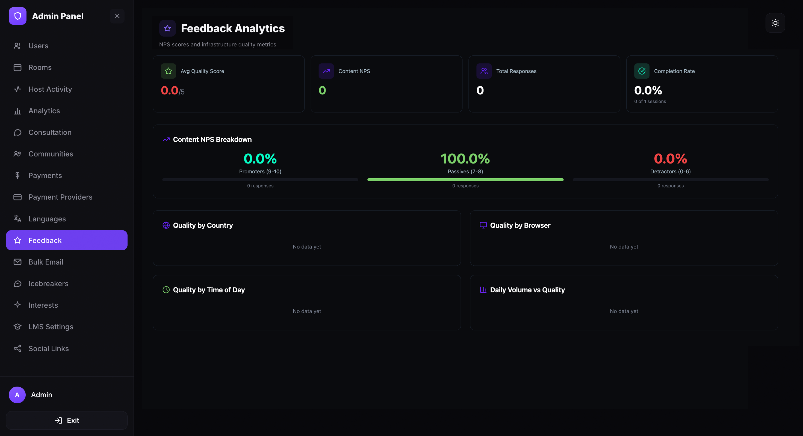
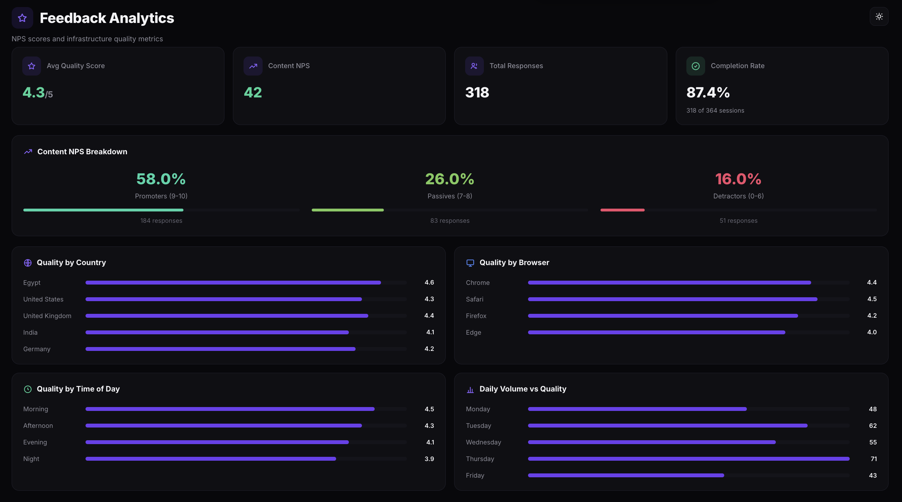

View and manage feedback
Monitor session quality through post-call feedback. The Feedback Analytics dashboard shows average quality scores, Net Promoter Score (NPS) breakdowns, response volume, and quality trends by country, browser, and time of day.
Open the Feedback page
- Open the Admin Panel.
- Click Feedback in the left sidebar.
The Feedback Analytics page displays NPS scores and quality metrics collected from post-call feedback surveys.

Read the summary cards
Once feedback starts coming in, the dashboard populates with live data. Four summary cards at the top show overall feedback performance:

The four summary cards display:
- Avg Quality Score — the average video and audio quality rating across all responses, on a scale of 1 to 5.
- Content NPS — the Net Promoter Score calculated from attendee responses. Ranges from −100 to 100.
- Total Responses — the total number of feedback submissions received.
- Completion Rate — the percentage of sessions where at least one attendee submitted feedback, shown as a count (e.g. 306 of 3899 sessions).
Understand the Content NPS Breakdown
Below the summary cards, the Content NPS Breakdown shows how responses are distributed across three NPS categories:
- Promoters (9–10) — respondents who rated the session 9 or 10. These are your most satisfied attendees.
- Passives (7–8) — respondents who rated the session 7 or 8. Satisfied but not enthusiastic.
- Detractors (0–6) — respondents who rated the session 6 or below. These attendees had a negative experience.
Each category shows its percentage of total responses and the number of individual responses. The colored progress bar gives a visual breakdown across all three segments.
Review quality breakdown charts
The lower section of the dashboard contains four charts that break down feedback quality by different dimensions:
- Quality by Country — shows average quality scores grouped by the attendee's country. Use this to identify regional quality issues.
- Quality by Browser — shows average quality scores by browser type. Helps spot browser-specific video or audio problems.
- Quality by Time of Day — shows how quality scores vary across different hours. Useful for identifying peak-load quality drops.
- Daily Volume vs Quality — plots the number of daily responses against the average quality score over time. Helps track trends as session volume grows.
How feedback is collected
Feedback is collected automatically after every session ends. When a participant leaves or a session is closed, a feedback dialog appears asking them to rate the video and audio quality on a 1–5 star scale and optionally leave a text comment. Submissions are anonymous — the feedback is used for platform quality monitoring only and is not visible to session hosts or other participants.